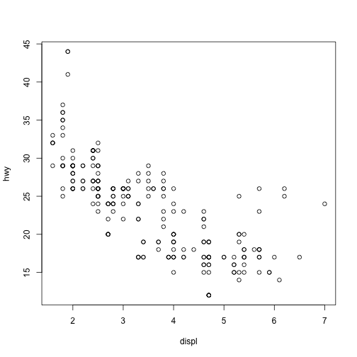
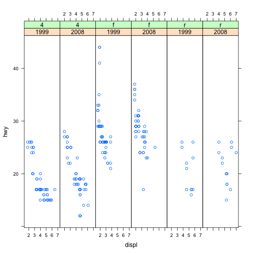
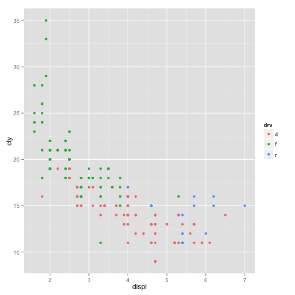
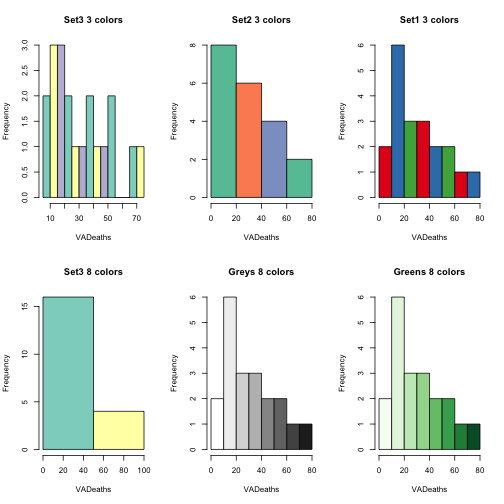
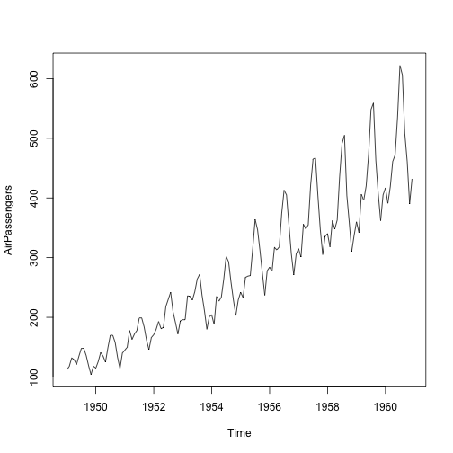
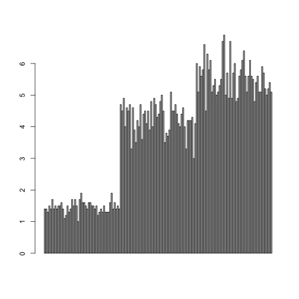
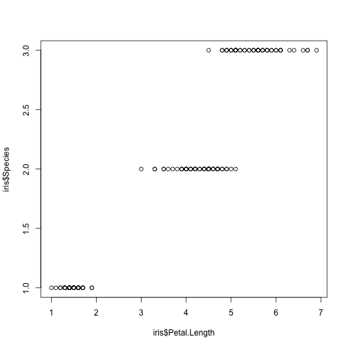
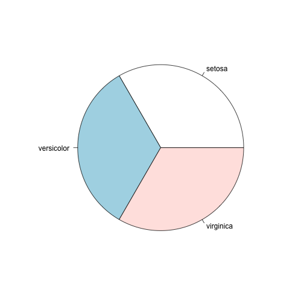
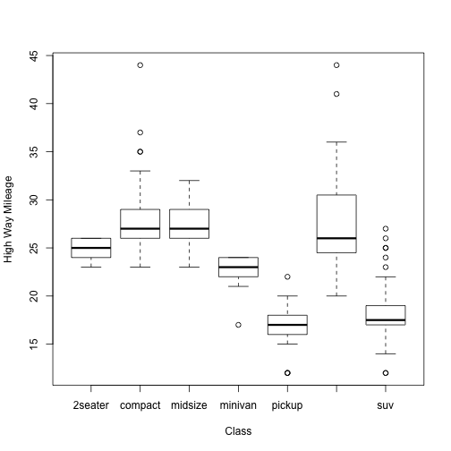

- Edit YAML front matter
- Write using R Markdown
- Use an empty line followed by three dashes to separate slides!
Programming in R
A short introduction
Alex Pacheco
LTS Research Computing
Read-And-Delete
History
- R is a dialect of the S language
- S was initiated at the Bell Labs as an internal statistical analysis environment.
- Most well known implementation is S‐plus (most recent stable release was in 2010)
- R was first announced in 1993.
- The R core group was formed in 1997, who controls the source code of R (written in C)
- R 1.0.0 was released in 2000
- The current version is 3.1.3
Features
- R is a dialect of the S language
- Language designed for statistical analysis
- Similar syntax
- Available on most platform/OS
- Rich data analysis functionalities and sophisticated graphical capabilities
- Active development and very active community
- CRAN: The Comprehensive R Archive Network
- Source code and binaries, user contributed packages and documentation
- More than 6,000 packages available on CRAN as of last week
- Free to use
Running R
Getting Help
- Command Line
?<command name>
??<part of command name/topic>
Data Classes
- R has five atomic classes
- Numeric
- Double is equivalent to numeric.
- Numbers in R are treated as numeric unless specified otherwise.
- Integer
- Complex
- Character
- Logical
- TRUE or FALSE
- You can convert data from one type to the other using the
as.<Type>functions
Data Objects‐ Vectors
- Vectors can only contain elements of the same class
- Vectors can be constructed by
- Using the
c()function (concatenate)
- Using the
- Coercion will occur when mixed objects are passed to the
c()function, as if theas.<Type>()function is explicitly called- Using the
vector()function
- Using the
- One can use
[index]to access individual element- Indices start from 1
Examples
# "#" indicates comment
# "<-" performs assignment operation (you can use "=" as well, but "<-" is preferred)
# numeric (double is the same as numeric)
d <- c(1,2,3)
# character
d <- c("1","2","3")
# you can covert at object with as.TYPE
# as. numeric changes the character vector created above to numeric
as.numeric(d)
## [1] 1 2 3
# The conversion doesn't always work though
as.numeric("a")
## Warning: NAs introduced by coercion
## [1] NA
Examples (contd)
x <- c(0.5, 0.6) ## numeric
x <- c(TRUE, FALSE) ## logical
x <- c(T, F) ## logical
x <- c("a", "b", "c") ## character
# The ":" operator can be used to generate integer sequences
x <- 9:29 ## integer
x <- c(1+0i, 2+4i) ## complex
x <- vector("numeric", length = 10)
# Coercion will occur when objects of different classes are mixed
y <- c(1.7, "a") ## character
y <- c(TRUE, 2) ## numeric
y <- c("a", TRUE) ## character
# Can also coerce explicitly
x <- 0:6
class(x)
## [1] "integer"
as.logical(x)
## [1] FALSE TRUE TRUE TRUE TRUE TRUE TRUE
Vectorized Operations
- Lots of R operations process objects in a vectorized way
- more efficient, concise, and easier to read.
x <- 1:4; y <- 6:9
x + y
## [1] 7 9 11 13
x > 2
## [1] FALSE FALSE TRUE TRUE
x * y
## [1] 6 14 24 36
print( x[x >= 3] )
## [1] 3 4
Data Objects - Matrices
- Matrices are vectors with a dimension attribute
- R matrices can be constructed
- Using the
matrix()function- Passing an dim attribute to a vector
- Using the
cbind()orrbind()functions
- Using the
- R matrices are constructed column‐wise
- One can use
[<index>,<index>]to access individual element
Example
# Create a matrix using the matrix() function
m <- matrix(1:6, nrow = 2, ncol = 3)
m
## [,1] [,2] [,3]
## [1,] 1 3 5
## [2,] 2 4 6
dim(m)
## [1] 2 3
attributes(m)
## $dim
## [1] 2 3
# Pass a dim attribute to a vector
m <- 1:10
m
## [1] 1 2 3 4 5 6 7 8 9 10
dim(m) <- c(2, 5)
m
## [,1] [,2] [,3] [,4] [,5]
## [1,] 1 3 5 7 9
## [2,] 2 4 6 8 10
# Row binding and column binding
x <- 1:3
y <- 10:12
cbind(x, y)
## x y
## [1,] 1 10
## [2,] 2 11
## [3,] 3 12
rbind(x, y)
## [,1] [,2] [,3]
## x 1 2 3
## y 10 11 12
# Slicing
m <- 1:10
m
## [1] 1 2 3 4 5 6 7 8 9 10
#m[c(1,2),c(2,4)]
Data Objects - Lists
- Lists are a special kind of vector that contains objects of different classes
- Lists can be constructed by using the
list()function - Lists can be indexed using
[[ ]]
# Use the list() function to construct a list
x <- list(1, "a", TRUE, 1 + 4i)
x
## [[1]]
## [1] 1
##
## [[2]]
## [1] "a"
##
## [[3]]
## [1] TRUE
##
## [[4]]
## [1] 1+4i
Data Objects - Data Frames
- Data frames are used to store tabular data
- They are a special type of list where every element of the list has to have the same length
- Each element of the list can be thought of as a column
- Data frames can store different classes of objects in each column
- Data frames also have a special attribute called
row.names - Data frames are usually created by calling
read.table()orread.csv() - Can be converted to a matrix by calling
data.matrix()
Names
- R objects can have names
# Each element in a vector can have a name
x <- 1:3
names(x)
## NULL
names(x) <- c("a","b","c")
names(x)
## [1] "a" "b" "c"
x
## a b c
## 1 2 3
Names (contd)
# Lists
x <- list(a = 1, b = 2, c = 3)
x
## $a
## [1] 1
##
## $b
## [1] 2
##
## $c
## [1] 3
# Names can be used to refer to individual element
x$a
## [1] 1
Names (contd)
# Columns and rows of matrices
m <- matrix(1:4, nrow = 2, ncol = 2)
dimnames(m) <- list(c("a", "b"), c("c", "d"))
m
## c d
## a 1 3
## b 2 4
Querying Object Attributes
- The
class()function - The
str()function - The
attributes()function reveals attributes of an object (does not work with vectors)- Class
- Names
- Dimensions
- Length
- User defined attributes
- They work on all objects (including functions)
Example
m <- matrix(1:10, nrow = 2, ncol = 5)
str(matrix)
## function (data = NA, nrow = 1, ncol = 1, byrow = FALSE, dimnames = NULL)
str(m)
## int [1:2, 1:5] 1 2 3 4 5 6 7 8 9 10
str(matrix)
## function (data = NA, nrow = 1, ncol = 1, byrow = FALSE, dimnames = NULL)
str(str)
## function (object, ...)
Data Class - Factors
- Factors are used to represent categorical data.
- Factors can be unordered or ordered.
- Factors are treated specially by modelling functions like
lm()andglm()
# Use the factor() function to construct a vector of factors
# The order of levels can be set by the levels keyword
x <- factor(c("yes", "yes", "no", "yes", "no"), levels = c("yes", "no"))
x
## [1] yes yes no yes no
## Levels: yes no
Date and Time
- R has a Date class for date data while times are represented by POSIX formats
- One can convert a text string to date using the
as.Date()function - The
strptime()function can deal with dates and times in different formats. - The package "
lubridate" provides many additional and convenient features
# Dates are stored internally as the number of days since 1970-01-01
x <- as.Date("1970-01-01")
x
## [1] "1970-01-01"
as.numeric(x)
## [1] 0
x+1
## [1] "1970-01-02"
Data and Time (contd)
# Times are stored internally as the number of seconds since 1970-01-01
x <- Sys.time() ; x
## [1] "2015-08-10 10:51:55 EDT"
as.numeric(x)
## [1] 1439218316
p <- as.POSIXlt(x)
names(unclass(p))
## [1] "sec" "min" "hour" "mday" "mon" "year" "wday"
## [8] "yday" "isdst" "zone" "gmtoff"
p$sec
## [1] 55.57873
Missing Values
- Missing values are denoted by
NAorNaNfor undefined mathematical operations.is.na()is used to test objects if they areNAis.nan()is used to test forNaNNAvalues have a class also, so there are integerNA, characterNA, etc.- A
NaNvalue is alsoNAbut the converse is not true
x <- c(1,2, NA, 10,3)
is.na(x)
## [1] FALSE FALSE TRUE FALSE FALSE
is.nan(x)
## [1] FALSE FALSE FALSE FALSE FALSE
Missing Values (contd)
x <- c(1,2, NaN, NA,4)
is.na(x)
## [1] FALSE FALSE TRUE TRUE FALSE
is.nan(x)
## [1] FALSE FALSE TRUE FALSE FALSE
Arithmetic Functions
| Function | Description |
|---|---|
exp() | Exponentiation |
log() | Natural Logarithm |
log10() | Logarithm to base 10 |
sqrt() | square root |
abs() | absolute value |
sin() | sine |
cos() | cosine |
floor() | |
ceiling() | rounding of numbers |
round() |
Simple Statistic Functions
| Function | Description |
|---|---|
min() | minimum value |
max() | maximum value |
which.min() | location of minimum |
which.max() | location of maximum |
pmin() | elementwise minima of several vectors |
pmax() | elementwise maxima of several vectors |
sum() | sum of elements of a vector |
mean() | mean of elements of a vector |
prod() | products of elements of a vector |
Distributions and Random Variables
- For each distribution R provides four functions: density (
d), cumulative density (p), quantile (q), and random generation (r)- The function name is of the form
[d|p|q|r]<name of distribution> - e.g.
qbinom()gives the quantile of a binomial distribution
- The function name is of the form
| Distribution | Distribution name in R |
|---|---|
| Uniform | unif |
| Binomial | binom |
| Poisson | pois |
| Geometric | geom |
| Gamma | gamma |
| Normal | norm |
| Log Normal | lnorm |
| Exponential | exp |
| Student’s t | t |
Examples: Distributions and Random Variables
# Random generation from a uniform distribution.
runif(10, 2, 4)
## [1] 3.538605 2.819273 2.336913 2.505583 2.085999 2.236007 3.075561
## [8] 3.320564 3.516750 3.402623
# You can name the arguments in the function call.
runif(10, min = 2, max = 4)
## [1] 2.104683 2.292803 2.360340 2.380251 2.798074 2.619530 2.771393
## [8] 2.497199 2.354845 3.139912
# Given p value and degree of freedom, find the t-value.
qt(p=0.975, df = 8)
## [1] 2.306004
# The inverse of the above function call
pt(2.306, df = 8)
## [1] 0.9749998
User Defined Functions
- Similar to other languages, functions in R are defined by using the
function()directives - The return value is the last expression in the function body to be evaluated.
- Functions can be nested
- Functions are R objects
- For example, they can be passed as an argument to other functions
Control Structures
- Control structures allow one to control the flow of execution.
if … else | testing a condition |
for | executing a loop (with fixed number of iterations) |
while | executing a loop when a condition is true |
repeat | executing an infinite loop |
break | breaking the execution of a loop |
next | skipping to next iteration |
return | exit a function |
Testing conditions
# Comparisons: <,<=,>,>=,==,!=
# Logical operations: !, &&, ||
if(x > 3 && x < 5) {
print ("x is between 3 and 5")
} else if(x <= 3) {
print ("x is less or equal to 3")
} else {
print ("x is greater or equal to 5")
}
For Loops
x <- c("a", "b", "c", "d")
# These loops have the same effect
# Loop through the indices
for(i in 1:4) {
print(x[i])
}
## [1] "a"
## [1] "b"
## [1] "c"
## [1] "d"
# Loop using the seq_along() function
for(i in seq_along(x)) {
print(x[i])
}
## [1] "a"
## [1] "b"
## [1] "c"
## [1] "d"
For Loops (contd)
# Loop through the name
for(letter in x) {
print(letter)
}
## [1] "a"
## [1] "b"
## [1] "c"
## [1] "d"
for(i in 1:4) print(x[i])
## [1] "a"
## [1] "b"
## [1] "c"
## [1] "d"
The apply Function
- The
apply()function evaluate a function over the margins of an array- More concise than the for loops (not necessarily faster)
# X: array objects
# MARGIN: a vector giving the subscripts which the function will be applied over
# FUN: a function to be applied
str(apply)
## function (X, MARGIN, FUN, ...)
x <- matrix(rnorm(200), 20, 10)
# Row means
apply(x, 1, mean)
## [1] 0.48336473 0.16715492 0.05847272 0.20662281 0.04493405
## [6] -0.08770365 0.15792048 -0.42426222 0.08991266 -0.17797986
## [11] 0.21355459 -0.25231872 0.24166843 0.21750826 -0.32148301
## [16] -0.52486632 0.15192574 -0.22418540 0.07787755 -0.13453577
The apply Function (contd)
# Column sums
apply(x, 2, sum)
## [1] -4.6586360 2.7735746 2.4135653 0.8587932 -4.6059086 0.6846277
## [7] 5.7661980 -0.6570225 -2.8231048 -0.1162671
# 25th and 75th Quantiles for rows
apply(x, 1, quantile, probs = c(0.25, 0.75))
## [,1] [,2] [,3] [,4] [,5] [,6]
## 25% 0.04222279 0.07638044 -0.3850304 -0.5268029 -0.5506386 -1.0979975
## 75% 0.90594988 0.41129796 0.7435271 0.9055006 0.3120472 0.7158073
## [,7] [,8] [,9] [,10] [,11] [,12]
## 25% -0.3674621 -0.9833996 -0.3099412 -0.9318761 -0.2761282 -0.8480592
## 75% 0.8310799 0.2508075 0.4080987 0.3833054 0.4231146 0.6084039
## [,13] [,14] [,15] [,16] [,17] [,18]
## 25% -0.1187785 -0.2709992 -1.1074485 -1.06048238 -0.7866159 -0.9731407
## 75% 0.8961099 0.8782394 0.3382637 -0.03624711 0.7195462 0.4070229
## [,19] [,20]
## 25% -0.6444881 -0.7648423
## 75% 0.8620322 0.7186549
The apply Function (contd)
dim(x)
## [1] 20 10
# Change the dimensions of x
dim(x) <- c(2,2,50)
# Take average over the first two dimensions
apply(x, c(1, 2), mean)
## [,1] [,2]
## [1,] 0.20236112 0.03726846
## [2,] -0.02104115 -0.22587204
rowMeans(x, dims = 2)
## [,1] [,2]
## [1,] 0.20236112 0.03726846
## [2,] -0.02104115 -0.22587204
Other Apply Functions
lapply: Loop over a list and evaluate a function on each elementsapply: Same as lapply but try to simplify the resulttapply: Apply a function over subsets of a vectormapply: Multivariate version of lapply
Plyr Package
- In data analysis you often need to
- split up a big data structure into homogeneous pieces,
- apply a function to each piece and then
- combine all the results back together
- This split‐apply‐combine procedure is what
the
plyrpackage is for.
Example: Plyr Package
library(ggplot2)
library(plyr)
str(mpg)
## 'data.frame': 234 obs. of 11 variables:
## $ manufacturer: Factor w/ 15 levels "audi","chevrolet",..: 1 1 1 1 1 1 1 1 1 1 ...
## $ model : Factor w/ 38 levels "4runner 4wd",..: 2 2 2 2 2 2 2 3 3 3 ...
## $ displ : num 1.8 1.8 2 2 2.8 2.8 3.1 1.8 1.8 2 ...
## $ year : Factor w/ 2 levels "1999","2008": 1 1 2 2 1 1 2 1 1 2 ...
## $ cyl : int 4 4 4 4 6 6 6 4 4 4 ...
## $ trans : Factor w/ 10 levels "auto(av)","auto(l3)",..: 4 9 10 1 4 9 1 9 4 10 ...
## $ drv : Factor w/ 3 levels "4","f","r": 2 2 2 2 2 2 2 1 1 1 ...
## $ cty : int 18 21 20 21 16 18 18 18 16 20 ...
## $ hwy : int 29 29 31 30 26 26 27 26 25 28 ...
## $ fl : Factor w/ 5 levels "c","d","e","p",..: 4 4 4 4 4 4 4 4 4 4 ...
## $ class : Factor w/ 7 levels "2seater","compact",..: 2 2 2 2 2 2 2 2 2 2 ...
str(ddply)
## function (.data, .variables, .fun = NULL, ..., .progress = "none",
## .inform = FALSE, .drop = TRUE, .parallel = FALSE, .paropts = NULL)
Example (contd)
ddply(mpg, "cyl", summarise, mean = mean(cty))
## cyl mean
## 1 4 21.01235
## 2 5 20.50000
## 3 6 16.21519
## 4 8 12.57143
Reading and Writing Data
- R understands many different data formats and has lots of ways of reading/writing them
| Funtion (read) | Function (write) | Description |
|---|---|---|
read.table | write.table | |
read.csv | write.csv | reading/writing tabular data |
readLines | writeLines | reading/writing lines of a text file |
source | dump | reading/writing in R code files |
dget | dput | reading/writing in R code files |
load | save | reading in/saving workspaces |
unserialize | serialize | reading/writing single R objects in binary form |
Reading Data with read.table
str(read.table)
## function (file, header = FALSE, sep = "", quote = "\"'", dec = ".",
## numerals = c("allow.loss", "warn.loss", "no.loss"), row.names,
## col.names, as.is = !stringsAsFactors, na.strings = "NA", colClasses = NA,
## nrows = -1, skip = 0, check.names = TRUE, fill = !blank.lines.skip,
## strip.white = FALSE, blank.lines.skip = TRUE, comment.char = "#",
## allowEscapes = FALSE, flush = FALSE, stringsAsFactors = default.stringsAsFactors(),
## fileEncoding = "", encoding = "unknown", text, skipNul = FALSE)
file‐ the name of a file, or a connectionheader‐ logical indicating if the file has a header linesep‐ a string indicating how the columns are separatedcolClasses‐ a character vector indicating the class of each column in the datasetnrows‐ the number of rows in the datasetcomment.char‐ a character string indicating the comment characterskip‐ the number of lines to skip from the beginningstringsAsFactors‐ should character variables be coded as factors?
Reading Data with read.table (contd)
- The function will
- Skip lines that begin with a #
- Figure out how many rows there are (and how much memory needs to be allocated)
- Figure out what type of variable is in each column of the table
- Telling R all these things directly makes R run faster and more efficiently.
read.csv()is identical toread.table()except that the default separator is a comma.
Graphics in R
- There are three plotting systems in R
- Base
- Convenient, but hard to adjust after the plot is created
- Lattice
- Good for creating conditioning plot
- Ggplot2
- Powerful and flexible, many tunable feature, may require some time to master
- Each has its pros and cons, so it is up to the users which one to choose
Graphics - Base
summary(mpg)
## manufacturer model displ year
## dodge :37 caravan 2wd : 11 Min. :1.600 1999:117
## toyota :34 ram 1500 pickup 4wd: 10 1st Qu.:2.400 2008:117
## volkswagen:27 civic : 9 Median :3.300
## ford :25 dakota pickup 4wd : 9 Mean :3.472
## chevrolet :19 jetta : 9 3rd Qu.:4.600
## audi :18 mustang : 9 Max. :7.000
## (Other) :74 (Other) :177
## cyl trans drv cty hwy
## Min. :4.000 auto(l4) :83 4:103 Min. : 9.00 Min. :12.00
## 1st Qu.:4.000 manual(m5):58 f:106 1st Qu.:14.00 1st Qu.:18.00
## Median :6.000 auto(l5) :39 r: 25 Median :17.00 Median :24.00
## Mean :5.889 manual(m6):19 Mean :16.86 Mean :23.44
## 3rd Qu.:8.000 auto(s6) :16 3rd Qu.:19.00 3rd Qu.:27.00
## Max. :8.000 auto(l6) : 6 Max. :35.00 Max. :44.00
## (Other) :13
## fl class
## c: 1 2seater : 5
## d: 5 compact :47
## e: 8 midsize :41
## p: 52 minivan :11
## r:168 pickup :33
## subcompact:35
## suv :62
Graphics - Base (contd)
plot(hwy ~ displ, data=mpg)

Graphics - Base (contd)
boxplot(hwy ~ class, data = mpg, xlab = "Class", ylab = "High Way Mileage")

Graphics - Lattice
mpg <- transform(mpg, year = factor(year))
xyplot(hwy ~ displ | year*drv, mpg, layout = c(6,1))

Graphics - ggplot2
qplot(displ, cty, data = mpg, color = drv)

Graphics - ggplot2
qplot(displ, hwy, data = mpg, facets = drv ~ year)
ggplot(emiByType, aes(year, sum, colour = type)) +
geom_point(size = 5) +
geom_line(size = 1) +
ggtitle("Total Emission in Baltimore City by Source Type") +
labs(x = "Year", y = "Total Emissions (ton)", fontsize = 20) +
theme_economist() + scale_colour_economist() +
theme(axis.title=element_text(size=14,face="bold"), legend.title =
element_text(size = rel(1.5), face = "bold"))
Histograms
library(RColorBrewer)
data(VADeaths)
par(mfrow=c(2,3))
hist(VADeaths,breaks=10, col=brewer.pal(3,"Set3"),main="Set3 3 colors")
hist(VADeaths,breaks=3 ,col=brewer.pal(3,"Set2"),main="Set2 3 colors")
hist(VADeaths,breaks=7, col=brewer.pal(3,"Set1"),main="Set1 3 colors")
hist(VADeaths,,breaks= 2, col=brewer.pal(8,"Set3"),main="Set3 8 colors")
hist(VADeaths,col=brewer.pal(8,"Greys"),main="Greys 8 colors")
hist(VADeaths,col=brewer.pal(8,"Greens"),main="Greens 8 colors")

Line Chart
plot(AirPassengers,type="l") #Simple Line Plot

Bar Chart
barplot(iris$Petal.Length) #Creating simple Bar Graph

barplot(iris$Sepal.Length,col = brewer.pal(3,"Set1"))

Bar Chart
barplot(table(iris$Species,iris$Sepal.Length),col = brewer.pal(3,"Set1")) #Stacked Plot

Box Plot
boxplot(iris$Petal.Length~iris$Species) #Creating Box Plot between two variable

Box Plot
data(iris)
par(mfrow=c(2,2))
boxplot(iris$Sepal.Length,col="red")
boxplot(iris$Sepal.Length~iris$Species,col="red")
boxplot(iris$Sepal.Length~iris$Species,col=heat.colors(3))
boxplot(iris$Sepal.Length~iris$Species,col=topo.colors(3))

Scatter Plots
plot(x=iris$Petal.Length) #Simple Scatter Plot

plot(x=iris$Petal.Length,y=iris$Species) #Multivariate Scatter Plot

plot(iris,col=brewer.pal(3,"Set1"))

pie(table(iris$Species))

Hexbin Binning
- We can use the hexbin package in case we have multiple points in the same place (overplotting). Hexagon binning is a form of bivariate histogram useful for visualizing the structure in datasets with large n.
#library(ggplot2) to get diamonds dataset
library(hexbin)
a=hexbin(diamonds$price,diamonds$carat,xbins=40)
library(RColorBrewer)
plot(a)

(Contd)
# We can also create a color palette and then use the hexbin plot function for a better visual effect.
rf <- colorRampPalette(rev(brewer.pal(40,'Set3')))
hexbinplot(diamonds$price~diamonds$carat, data=diamonds, colramp=rf)

Mosaic Plot
- A mosaic plot can be used for plotting categorical data very effectively with the area of the data showing the relative proportions.
data(HairEyeColor)
mosaicplot(HairEyeColor)

Heat Map
- Heat maps enable you to do exploratory data analysis with two dimensions as the axis and the third dimension shown by intensity of color.
- However you need to convert the dataset to a matrix format. Here’s the code:
heatmap(as.matrix(mtcars))

Heat Map (contd)
- You can use
image()command also for this type of visualization as:
image(as.matrix(mtcars[2:7]))

3D Graphs
- Install package R Commander
install.packages("Rcmdr") - Install Lattice package
- Correlogram (GUIs)
Correlogram help us visualize the data in correlation matrices. Here’s the code:
cor(iris[1:4])
## Sepal.Length Sepal.Width Petal.Length Petal.Width
## Sepal.Length 1.0000000 -0.1175698 0.8717538 0.8179411
## Sepal.Width -0.1175698 1.0000000 -0.4284401 -0.3661259
## Petal.Length 0.8717538 -0.4284401 1.0000000 0.9628654
## Petal.Width 0.8179411 -0.3661259 0.9628654 1.0000000
corrgram(iris)

Slide with R Code and Output
summary(cars)
## speed dist
## Min. : 4.0 Min. : 2.00
## 1st Qu.:12.0 1st Qu.: 26.00
## Median :15.0 Median : 36.00
## Mean :15.4 Mean : 42.98
## 3rd Qu.:19.0 3rd Qu.: 56.00
## Max. :25.0 Max. :120.00
Slide with Plot
plot(cars)